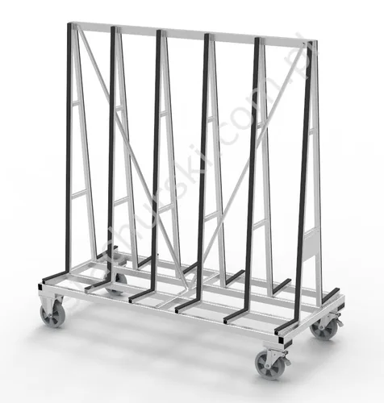

TROLLEYS / 09 MODELS OFFICIAL CATALOGUE FAMILY
Trolleys
for glass & windows
Mobile racks and handling trolleys designed for the movement of glass, windows and workshop loads.
9 MODELS / OPTIONS·STACHURSKI / 1974
— IN THIS RANGE
Models and options in the official range
Product references follow Stachurski’s published catalogue. Confirm current availability and configuration with the team.
S↗
TROLLEYS · PRODUCT FAMILY
Have a model in mind?
Send the model code and your handling requirements to request a tailored quotation.